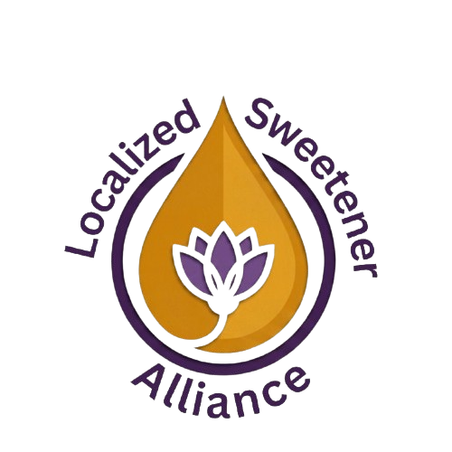

Advancing local food sovereignty and ecological stewardship by supporting businesses and building partnerships that scale the alternative sweetener market.
Join the BoardIndustrial white sugar carries a massive environmental toll with bulk processing and long-distance freight accounting for 15–20% of global agricultural emissions. Therefore, it’s wise to consider localized sweetener options at commercial scales. Whether it’s tree saps in the Pacific Northwest, agave in the Southwest, or sweet sorghum in the Midwest, there are localized alternatives to refined sugar. These more sustainable choices showcase distinct regional flavor profiles without relying on hyper-processed "bliss points" which drive overconsumption that can lead to health problems.
A sustainable sweetener market must address the impact of agricultural beekeeping on biodiversity. While commercial honeybees (Apis mellifera) are vital to agriculture, managed hives often outcompete native pollinators for limited forage. The Localized Sweetener Alliance (LSA) seeks to promote responsible co-existence by connecting commercial beekeepers with local businesses and funding grants to boost revenue that would empower apiarists and communities to plant dedicated habitats for native wildflowers and pollinators.
Facilitate partnerships between regional alternative sweetener producers and local businesses in their vicinity.
Assist alternative sweetener producers with the resources to found, scale, and grow their operations.
Champion policies that empower small-scale sweetener producers and incentivize the local businesses that support them.
Advocate for policies and agricultural subsidies that reward beekeepers who actively mitigate their impact on native pollinators.
LSA will lobby for policies that accelerate the growth, development, and adoption of local sweetener enterprises. This includes advocating for food manufacturer subsidies, state grants for alternative sweetener producers, and tax incentives for businesses that utilize sweeteners from local sources.
Lobbying for subsidies that reward commercial beekeepers who plant designated acreages of native floral forage to offset their hives' impact on wild pollinators.
Publishing scientific white papers and agronomic studies to guide policy on sweetener yields, economic impact, and pollinator health.
Hosting regional matchmaking hubs to directly connect sweetener producers with local bakeries, beverage makers, and food manufacturers.
Creating dedicated spaces to bring diverse sweetener producers together with external experts, including eco-economists, biologists, and supply chain managers.
Funding industry excellence by awarding micro-grants for achievements such as "Most Sustainable Producer" and "Highest Native Forage Offset."
Organizing, sponsoring, and promoting hands-on educational seminars dedicated to DIY and small-scale sweetener harvesting, pressing, and preparation.
Holding community tasting competitions and bake sales to highlight regional sweetener producers, educate consumers, and drive local demand.
Launching public campaigns to explain the commercial vs. native bee dynamic and advocating for urban pollination projects.
Localized alternative sweeteners are natural, minimally processed sweetening agents sourced, produced, and typically consumed regionally. This includes honey, sweet sorghum syrup, tree saps (such as maple or bigleaf), and concentrated fruit juices. These are considered sustainable alternatives to heavily refined and supply-chain-intensive cane, beet, and corn sugars.
While honey is a vital regional sweetener, commercial honeybee hives can outcompete and disrupt wild, native pollinators. A resilient ecosystem requires a diverse approach that balances responsible beekeeping with a wide variety of other agricultural sweetening crops.